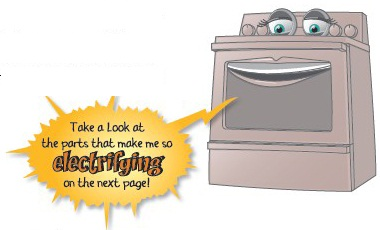

“Generally speaking, electric cooking is pretty simple. Here’s how it works... Electric stoves have a heater that you put a pot on top of called the burner. In almost all newer electric stoves this burner is plugged into a receptacle, located just beneath the stove top. The burner is controlled by a switch, which controls the amount of heat by turning the electricity on and off for certain amounts of time while you are cooking. Pretty simple right? Now, let’s talk about oven cooking.”
“We can cook in the oven two ways, either by baking or broiling. For baking, we use the heating coil at the bottom of the oven called the bake element. While baking, we control the temperature with the thermostat by turning the element on and off continually to get the right average temperature for cooking.”
“The other way we cook in the oven is by broiling, where food is placed directly under a heater at the top of the oven called the broil element. There is no temperature control here, so you have to watch your food to see that we don’t burn it up! If you do let it burn, don’t complain to your stove about it either, we’re just doing our job. Some ranges out there have a thermostat that is designed to control both functions, bake and broil, but most ranges just have the additional switch for the oven called the selector switch that allows you to select either bake or broil.”
“Now, I don’t know if you know, but some ranges are actually built with two ovens. That’s right, they are called double ovens. Ranges that have two ovens, will have two sets of controls, one set for each oven. When replacing parts in a double oven, it is important to know which oven you need the parts for since each one might be slightly different.”
“Did you know that some ovens can clean themselves?! That’s right, self cleaning is done by combining all of the oven components above to get the oven to heat up to a temperature of about 800 degrees for a certain length of time to burn the oven clean. There is also the addition of a locking system to keep the oven closed while it is at the high temperature. Another variation in electric ranges is the ‘Convection Oven’, which is basically a standard oven that has a combination of an additional heater and a fan to circulate the hot air, substantially shortening the time it takes to cook your food. My uncle is a convection oven; he is always bragging about how fast he can cook, as if he’s a microwave or something.”
“Today’s modern ranges are designed with convenience in mind, which is why we are equipped with a feature that allows you to set us to start automatically and cook your food for a pre-determined amount of time, and then shut off again. We do this by using a clock-timer. These days, our manufacturers are combining the functions of the thermostat, selector switch, and clock-timer into one electronic unit. This unit is called either the electronic range control (ERC) or the electronic oven control (EOC).”
